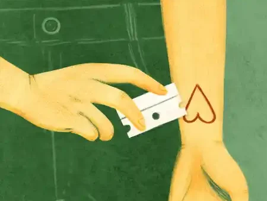

“The axiom of equality states that x always equals x: it assumes that if you have a conceptual thing named x, that it must always be equivalent to itself, that it has a uniqueness about it… that its very elementalness can never be altered.”
A Little Life by Hanya Yanagihara is a book with a beginning that sucks you into the vortex of something most people look for and enjoy reading about– mundane life, the friendship shared by four friends at a prestigious university in New England; and an ending that makes you want to toss all 720 pages out the window without a second thought.
It follows a chronological narrative interspersed with frequent flashbacks. We are offered a third person omniscient perspective into Willem, Jude, JB and Malcolm’s minds. They are a diverse group: sweet, handsome Willem, who works as a waiter but aspires to be an actor; Malcolm, the overlooked sibling in a wealthy Upper East Side family, who works as an architect at a reputable firm; Jean Baptiste (JB) Marion, a sharp-tongued talented artist who comes from a loving family of Haitian immigrants, currently working as a receptionist at an arts magazine he wishes to be featured in; and the protagonist of our story- Jude St. Francis, an enigmatic lawyer and mathematician with a mysterious past.
As we follow our characters attending parties, apartment-hunting, engaging in banters, it is easy to get a sense of déja-lu: one of many expositions on the classic American Dream postgraduate scene (think Donna Tartt’s ‘The Secret History’, Mary McCarthy’s ‘The Group’, etc.) They are agnostic and avant garde. “New York was populated by the ambitious,” JB observes. “It was often the only thing that everyone here had in common…. Ambition and atheism.” Jude’s ethnic origins and sexuality are unknown, his past a definite question mark to even his closest friends. JB calls Jude “the Postman … post-sexual, post-racial, post-identity, post-past.”


Gradually, the story takes a turn towards Jude’s traumatic childhood. The ‘Little Life’ in question here, is Jude’s and Willem, his former roommate, plays an important role in it while Malcolm and JB are seldom present at the forefront, making significant advances to their own careers meanwhile. With the sole focus on Jude, ‘A Little Life’ turns into something nonconformist- we encounter Jude’s uncontrollable self-harming tendencies, how he was found in a dumpster and raised in a monastery, the scars on his back from an accident that happened in his early teen years that left his spine and legs badly injured. At this point we get introduced to Andy, a college friend and Jude’s doctor, after a bad cutting incident that led to Jude having to wake Willem in the middle of the night and get him treated.
His cutting becomes a recurring theme. It was both a consequence of and a way to control the haunting memories, ‘the hyenas’ as he called them, that chased him endlessly. His past is handed to us piece by piece by Yanagihara, often through flashbacks of confessions and divulgences. He was taught to cut himself by Brother Luke, one of the antagonists in the story and who appears to be his saviour at first. He abducts Jude from the monastery with the promise of starting their happy life together in a cottage in the woods, just the two of them, as father and son. However the reality of the situation soon turns out to be a highly unnerving contrast as he forces Jude into prostitution, even sexually exploiting Jude himself. Luke claims to ”love” Jude and Jude is too young to recognise the difference between love and a paedophile’s grooming. Even as an adult, Jude is never fully able to vilify Luke and the enduring physical and psychological abuse Luke subjects him to leaves him unable to enjoy sexual intimacy in adulthood. There is also Dr. Traylor, a sadistic psychiatrist, who imprisons Jude in his basement and treats him for STDs. Once the infection began waning, he started abusing him as repayment for his “hospitality”.
An important thread running throughout Willem’s story is him finding his ground after launching a successful career in the movies.
“But how was one to be an adult? Is couplehood truly the only appropriate option?”
Jeering comments from colleagues about not being settled and failed relationships with women- the major concern being his codependency with Jude led Willem to start questioning his priorities. His unmitigated loyalty to his friends is evident in the way he terms his life as meaningful
“because I’m a good friend. I love my friends, and I care about them, and I think I make them happy.”
My one grievance with the book is probably the author’s treatment of JB and Malcolm. One cannot help but find her portrayal of black as well as queer characters a tad superficial and lazy. Malcolm is mentioned only at times Jude or Willem needs a renovation and JB’s character is hated by the protagonist to the point where he stops possessing any other significant characteristic traits. There are a couple blink-and-you-miss-it instances of JB’s redeeming qualities– JB who carried Jude to the hospital during one of his episodes and made a scene until the doctor finally saw Jude; JB who envied his life, his looks, his career, the one person who saw him as competition and not someone to pity; JB who asked too many questions yet asked Harold to hold back from demanding the same answers.
“…life rearranges itself to compensate for your loss, sometimes wonderfully.”
It is the relentless suffering and hindrances faced by the protagonist that truly sets this book apart and makes it unlike any of its counterparts. Its not-so-subtle subversive attitude hints at the impossibility of any chances of redemption, as is felt by Jude throughout the last 100 pages and even before that. Mathematics and logic is his religion. During some of the worst episodes in his life we find him turning to one of his favourite concepts known as the axiom of equality: x always equals x. To him, the way his friends and loved ones perceived him were inconsequential; not that he is ungrateful; rather they could never love someone so deformed, so incapable of normality. He could never be everything they assured him he was, he is changeless and mutilated. Yanagihara’s novel raises significant questions about humanity and euthanasia and modern Western life. It is dark, it is gruesome, it is devoid of sugarcoating, yet somewhere along the way it has some lessons, lessons of empathy, understanding and the miraculous improbability of life.
I cannot say for certain if I would essentially recommend this book to anyone, read it at your own discretion to be quite frank, but it surely is an experience, quite unforgettable in its ruthless misery.